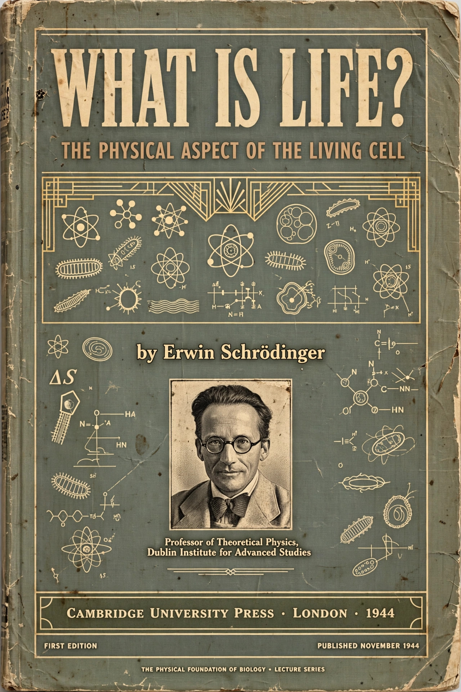

| Author | Erwin Schrödinger |
|---|---|
| Published | 1944 (Cambridge University Press) |
| Subject | Biophysics, genetics |
| Full title | What Is Life? The Physical Aspect of the Living Cell |
What Is Life? The Physical Aspect of the Living Cell is a 1944 science book written for a lay audience by the Austrian physicist Erwin Schrödinger, based on a series of public lectures he delivered at the Dublin Institute for Advanced Studies in February 1943. Although written before the structure of DNA was known, the book was remarkably prescient and became one of the most influential scientific works of the 20th century.
Schrödinger asked how the events in space and time which take place within a living organism can be accounted for by physics and chemistry. He proposed that hereditary information is stored in a molecule he called an "aperiodic crystal" — a structure regular enough to be stable, yet irregular enough to encode enormous amounts of information — in effect predicting the nature of the gene a decade before the double helix was determined. He also argued that life maintains itself by feeding on "negative entropy" (the book coined discussion of negentropy), importing order from its environment to counteract the second law of thermodynamics.
The book was famously credited by James Watson as having inspired him to pursue the gene, and it also influenced Francis Crick and Maurice Wilkins; Crick described it as having "brought the excitement of biology to a broad audience" and it recruited many physicists into biology after the Second World War. Some of Schrödinger's specific claims (such as the suggestion that new laws of physics might be needed) drew criticism from geneticists and physicists alike, but its conceptual framework — information stored in a molecular code-script — anticipated molecular biology.